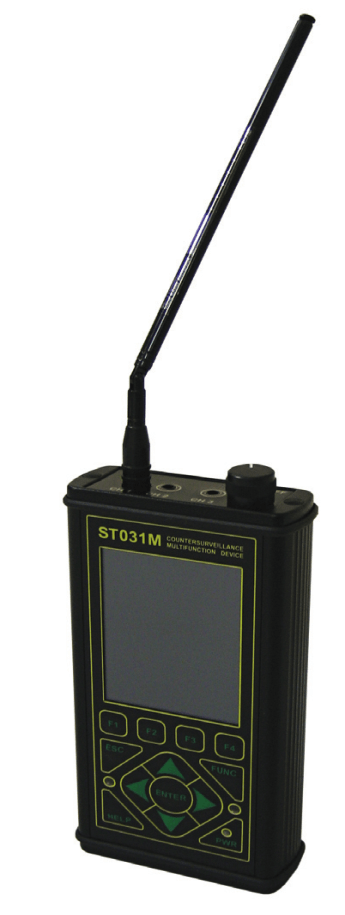
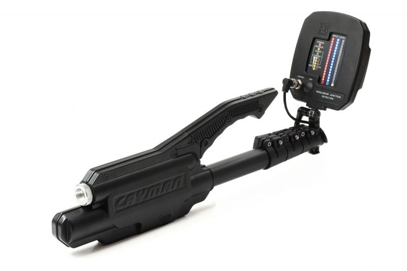

")
Technical Surveillance Counter Measures
The original printed article can be found here.
A few years ago, surveillance has been considered a government or spy agency priority but the rapid research and development in IT and electronic devices, along with nodes and device shrinkage has made surveillance accessible to everyone. It is sufficient for one to browse for spy bugs, hidden camera, etc., and thousands of surveillance suggestions will be shown and available upon which it only depends on the commitment and financial constraints for one to start spying. Practices show, that many people are taking advantage of the easy access to eavesdropping technologies.
This article does not focus on surveillance carried in interest of national security or crime fighting agencies but rather focus on businesses, politicians and ordinary people. Bellow I would classify the most vulnerable to surveillance people:
Most exposed to eavesdropping:
- Famous people, movie stars, celebrities.
- Goods or securities trading premises, investment bankers, investment companies, brokers, negotiating contracts, preparing offers.
- Companies exchanging offices or in development of new facilities and projects, businesses subject to hostile takeovers.
- Individuals with access to classified information /state secret/.
- Individuals or businesses involved in litigation.
- Offices and individuals involved in political campaigns, political situations.
- Victims of obsessive pursuers.
- Voluntary organizations.
- Religious groups or figures.
- Scientists developing new technologies and devices.
- Companies and individuals objects of industrial espionage.
Below are listed those who intercept most:
- Competitors or partners.
- Tenderers against other bidders or against the clients.
- Husbands and lovers.
- Employers against their employees, subordinates against their colleagues and superiors, human resources, internal security.
- Neighbours, intrusives, maniacs, random.
The above arrangement is made according to statistics on the frequency of the applied and ordered interceptions.
The most commonly used surveillance tools and methods are:
- Mini video cameras and recorders, often camouflaged in various household items as watches, key chains, lighters, etc.
- Radio microphones, GSM-microphones, various BLUETOOTH, Wi-Fi, IP and WIRELESS microphones and cameras.
- Eavesdropping software monitoring GSM phones, computers, laptops and tablets.
- Microphones transmitting information through the electrical grid, internet cables or security systems wiring.
- Stethoscope microphones.
- Wired microphones and cameras with their own wiring.
- Laser, infrared, parabolic or shotgun microphones.
- Devices intercepting the electromagnetic radiation of the computers, phones and other equipment for data processing and communication.
What's distinctive for the above listed methods and devices are that they are widely available, cheap to purchase, their operation does not require high technical skills and devices with access to Internet either through Wi-Fi, mobile or stationary networks could be operated from any part of the World.
All listed methods and devices can be considered just an illustration, as the available spying means are more than eighteen and the ways they are used can hardly be enumerated. As an example to the variety with the most famous and used eavesdropping method is the radio microphone interception.
Radio microphones differ by their operational frequencies; whether they can be remotely switched on or off; whether or not they can be sound activated; what modulation they use; whether or not the power is constant or remotely adjustable, if they use signal encryption or other transmission masking methods; are they analog or digital, do they have "burst" transmission; etc. As far as powering, radio microphones can be supplied by batteries, by the electrical grid, using the energy from the equipment in which they are hidden or camouflaged and by other sources.
The variety of the eavesdropping methods and means pose the question of how to protect ourselves and is it easy to detect a "bug".
Let's go back to the radio microphone. The detection of the most famous and old eavesdropping device should be easily executed and well developed methodological and technological process. Confirmation of the above you will find in the variety of "magic boxes with antennas" available on the market within the 50-100$ range and so called bug detectors. In fact, those "bug detectors" are developed to react and discover only radio microphones and in most cases they work in a narrow frequency range detecting mainly analog signals but missing all others and reacting to noise - not related to the surveillance.
According to the theory that if you look for a radio microphone you should orient using the signal strength and the exact location should be at the peak of the signal, unfortunately does not always hold true and you are directed to an empty space in the middle of the premise while the strength of the signal comes from the nearest radio station. Providing that the microphone is not in an empty space, it is necessary to use additional devices and methods to localize it. Considering the wide variety of radio transmitted microphones, wireless technologies, different frequencies and modulations, data transmission protocols and other special features of these devices etc., a reliable detection and localization of the bugs will require the usage of sophisticated devices which will be able to fast and reliably intercept such microphones.
Similar situation holds true for detection of all other eavesdropping surveillance methods. Detecting eavesdropping devices is not an easy and simple work. The term describing this type of activity and that has become popular in the past few years is TSCM, the abbreviation of Technical Surveillance Counter Measures. TSCM survey is a service provided by qualified personnel to detect the presence of technical surveillance devices and hazards and to identify technical security weaknesses that could aid in the conduct of a technical penetration of the surveyed facility. A TSCM survey provides a professional evaluation of the facility's technical security posture and normally consists of a thorough visual, electronic, and physical examination in and about the surveyed facility. In conducting surveillance protection one has to be familiar with the tapping methods; hardware and software products; engineering solutions used for this purpose; as well as their unmasking signs. Without this knowledge it is not possible to detect a well camouflaged bug.
Considering the radio spectrum pollution including all kinds of radio broadcasts, as well as the glut of modern homes, offices and cars with electronic devices, detecting spying device among other signals and components, a good equipment capable of intercepting and unmasking is needed. For the successful implementation of this activity is necessary to have a properly trained personnel, good working methodology and appropriate set of technical means. As we mentioned earlier, there are over 18 method of eavesdropping and much more devices used for each method. This raises the question, how many and what instruments are needed to detect a bug.
Example of the necessary equipment for the detection of radio microphone is radio frequency spectrum analyser, wideband radio receiver and nonlinear junction detector /NLJD/. And this can be considered an absolute minimum. To avoid confusion with the unmasking signs with signals of other devices operating in the ambient it is good to have a device running on a new principle, having the opportunity to detect a new and unique unmasking sign.
Here is an example of detection of a hidden video camera. The detection of such a camera at either the optical principle, by detecting the blinks of the lens, or using thermographic camera, which detects the thermal radiation, or using NLJD which detects the presence of electronics, or for the wireless cameras by intercepting the radio signal. Note, that these signs may be masked or confused with the signals of other devices. As such it is useful when you intercept or localize a signal with characteristics similar to the matrix of a working video camera, no matter if it is wired or wireless.
Detection devices must be ergonomically designed, self-powered, working fast and with a convenient software and hardware management. If we take a large laboratory spectrum analyser, which has a variety of settings and modes, but runs slow and cumbersome, it cannot be carried and is not self-powered, it will not achieve anything in the detection of radio microphones.
It is also obvious that using a specific device for each type of unmasking sign is inefficient and inconvenient. As such it is a better solution to use of multi purpuse search devices devices, supplemented by specialized ones. It's not always that more complex and more expensive equipment is better. The best device suited for TSCM activities should be easy to transport, to work quickly and to be able to identify both common and unique unmasking bug signs. The device has to be easy to manage by the staff that uses it. Often the personnel performing TSCM activities work under stress in a confined space, lack of time and need to urgently relocate in or around the investigated target.
Choosing the technical means one has to pay attention to the specifications, the promptness and conformity of work, the additional features for verification and control of the received signals and not in the least - the price of the equipment. The issue of interception and eavesdropping protection is a complex. Both activities are developing very dynamically. Unfortunately there is no way to point all aspects in one article. Practice shows that the systematic work and the funds invested for eavesdropping protection are sooner or later paid off.